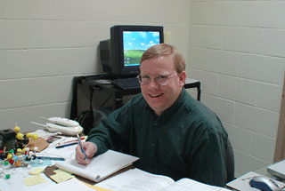

{kind=link}
Gary L. Succaw
Assistant Professor of Chemistry
Howard Payne University
gsuccaw@hputx.edu
Office: Winebrenner 213
Phone: (325) 646-2502 ext. 5425
Education
B.S., Grand Valley State University, 1990. M.S., Michigan State University, 1994 (Thomas J. Pinnavaia). Ph.D., University of Oregon, 2004 (Kenneth M. Doxsee).
Experience
Assistant Professor at Howard Payne University since 2004.
Adjunct Instructor at Grand Valley State University from 1994-1998.
Responsibilities at HPU
My main responsibility is teaching the Organic Chemistry lecture and laboratory. Additional responsibilities include teaching Fundamentals of Chemistry, General Chemistry, and Advanced Inorganic Chemistry.
Selected Publications
Succaw, G. L.; Weakley, T. J. R.; Han, F.; Doxsee, K. M. "Crystal Engineering with Bis(thiourea) Derivatives" Cryst. Growth Des., 2005, 5(6), 2288-2298.
Warner, M. G.; Succaw, G. L.; Hutchison, J. E. "Solventless syntheses of mesotetraphenylporphyrin: new experiments for a greener organic chemistry laboratory curriculum" Green Chemistry , 2001, 3, 267-270.
Professional Organizational Memberships
Texas Academy of Science
Interests
Academic
At the University of Oregon, I participated in the development of several undergraduate laboratories with an emphasis on Green Chemistry (laboratories that are designed to be more environmentally friendly). One such laboratory was the iodination of vanillin using KI and household bleach. Here at HPU I continue to develop laboratories for use in a small school setting with a very limited budget.I've already tested a procedure for oxidizing 9-hydroxyfluorene to 9-fluorenol using household bleach and acetic acid at room temperature. The students had a difficult time recovering the 9-fluorenone by evaporating the ethyl acetate. The oxidation took place by dissolving the 9-hydroxyfluorene in ethyl acetate and stirring the solution with the mixture of acetic acid and bleach at room temperature. We stopped the reaction at 30 minutes, but it probably needed to run for about an hour instead. We have since tried potassium permanganate/acidic alumina with ethyl acetate as the solvent. We removed the solid by filtration and to our surprise no extraction of excess potassium permanganate from the solvent was necessary. The ethyl acetate was evaporated leaving a bright, fluorescent-yellow solid behind.
Other interests include using clays as lewis acid catalysts for the undergraduate laboratory. Molecular recognition and crystal growth.